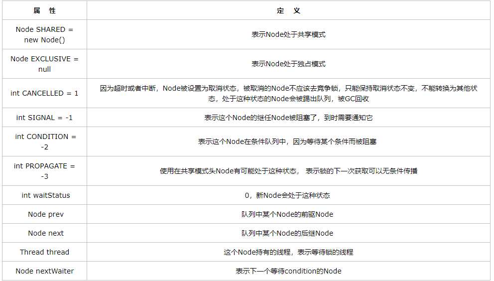

什么是线程安全
线程安全可以简单理解为一个方法或者一个实例可以在多线程环境中使用而不会出现问题。多说一点就是线程安全就是多线程访问时，采用了加锁机制，当一个线程访问该类的某个数据时，进行保护，其他线程不能进行访问直到该线程读取完，其他线程才可使用。不会出现数据不一致或者数据污染。
线程不安全就是不提供数据访问保护，有可能出现多个线程先后更改数据造成所得到的数据是“脏”数据。
比方说ArrayList是非线程安全的，Vector是线程安全的；HashMap是非线程安全的，HashVector是线程安全的；StringBuilder是非线程安全的，StringBuffer是线程安全的。
产生线程不安全的原因
在同一程序中运行多个线程本身不会导致问题，问题在于多个线程访问了相同的资源。如，同一内存区（变量，数组，或对象）、系统（数据库，web services等）或文件。实际上，这些问题只有在一或多个线程向这些资源做了写操作时才有可能发生，只要资源没有发生变化,多个线程读取相同的资源就是安全的。
记住引用不是线程安全的，即使一个对象是线程安全的不可变对象，指向这个对象的引用也可能不是线程安全的。
Java线程安全的类
- 通过
synchronized关键字给方法加上内置锁来实现线程安全Timer，TimerTask，Vector，Stack，HashTable，StringBuffer - 原子类
Atomicxxx—包装类的线程安全类
如AtomicLong，AtomicInteger等等 BlockingQueue和BlockingDequeThreadPoolExecutorThreadPoolExecutor也是使用了ReentrantLock显式加锁同步
锁的种类和区别
公平锁/非公平锁
公平锁是指多个线程按照申请锁的顺序来获取锁。
非公平锁是指多个线程获取锁的顺序并不是按照申请锁的顺序，有可能后申请的线程比先申请的线程优先获取锁。有可能，会造成优先级反转或者饥饿现象。
对于 Java ReentrantLock 而言，通过构造函数指定该锁是否是公平锁，默认是非公平锁。非公平锁的优点在于吞吐量比公平锁大。
对于 Synchronized 而言，也是一种非公平锁。由于其并不像 ReentrantLock 是通过 AQS 的来实现线程调度，所以并没有任何办法使其变成公平锁。
可重入锁
可重入锁又名递归锁，是指在同一个线程在外层方法获取锁的时候，在进入内层方法会自动获取锁。
Java ReentrantLock以及Synchronized都是可重入锁
独享锁/共享锁
独享锁是指该锁一次只能被一个线程所持有。共享锁是指该锁可被多个线程所持有。
对于Java ReentrantLock而言，其是独享锁。但是对于Lock的另一个实现类ReadWriteLock，其读锁是共享锁，其写锁是独享锁。Synchronized是独享锁。
乐观锁/悲观锁
乐观锁与悲观锁不是指具体的什么类型的锁，而是指看待并发同步的角度。
悲观锁认为对于同一个数据的并发操作，一定是会发生修改的，哪怕没有修改，也会认为修改。因此对于同一个数据的并发操作，悲观锁采取加锁的形式。悲观的认为，不加锁的并发操作一定会出问题。
乐观锁则认为对于同一个数据的并发操作，是不会发生修改的。在更新数据的时候，会采用尝试更新，不断重新的方式更新数据。乐观的认为，不加锁的并发操作是没有事情的。
从上面的描述我们可以看出，悲观锁适合写操作非常多的场景，乐观锁适合读操作非常多的场景，不加锁会带来大量的性能提升。悲观锁在Java中的使用，就是利用各种锁。乐观锁在Java中的使用，是无锁编程，常常采用的是CAS算法，典型的例子就是原子类，通过CAS自旋实现原子操作的更新。
偏向锁/轻量级锁/重量级锁
这三种锁是指锁的状态，并且是针对Synchronized。在Java 5通过引入锁升级的机制来实现高效Synchronized。这三种锁的状态是通过对象监视器在对象头中的字段来表明的。
偏向锁是指一段同步代码一直被一个线程所访问，那么该线程会自动获取锁。降低获取锁的代价。
轻量级锁是指当锁是偏向锁的时候，被另一个线程所访问，偏向锁就会升级为轻量级锁，其他线程会通过自旋的形式尝试获取锁，不会阻塞，提高性能。
重量级锁是指当锁为轻量级锁的时候，另一个线程虽然是自旋，但自旋不会一直持续下去，当自旋一定次数的时候，还没有获取到锁，就会进入阻塞，该锁膨胀为重量级锁。重量级锁会让其他申请的线程进入阻塞，性能降低。
自旋锁
在Java中，自旋锁是指尝试获取锁的线程不会立即阻塞，而是采用循环的方式去尝试获取锁，这样的好处是减少线程上下文切换的消耗，缺点是循环会消耗CPU。
synchronized
三种应用方式
- 修饰实例方法，作用于当前实例加锁，进入同步代码前要获得当前实例的锁
- 修饰静态方法，作用于当前类对象加锁，进入同步代码前要获得当前类对象的锁
- 修饰代码块，指定加锁对象，对给定对象加锁，进入同步代码库前要获得给定对象的锁。
作用于实例方法的时候，会出现new了两个不同的实例对象，这也就意味着存在着两个不同的实例对象锁，这个时候各自的进程使用的就是不同的锁就不能保证线程的安全，这个时候就是用Synchronized作用于静态方法，因为锁对象是当前类的class对象。
Java 虚拟机中的同步(Synchronization)基于进入和退出管程(Monitor)对象（存在于每个Java对象的对象头）实现， 无论是显式同步(有明确的 monitorenter和 monitorexit指令,即同步代码块)还是隐式同步都是如此。
synchronized代码块底层原理
同步语句块的实现使用的是monitorenter 和 monitorexit指令，其中monitorenter指令指向同步代码块的开始位置，monitorexit指令则指明同步代码块的结束位置，当执行monitorenter指令时，当前线程将试图获取 objectref(即对象锁) 所对应的 monitor的持有权，当 objectref的monitor的进入计数器为 0，那线程可以成功取得monitor，并将计数器值设置为 1，取锁成功。如果当前线程已经拥有 objectref 的 monitor的持有权，那它可以重入这个 monitor (关于重入性稍后会分析)，重入时计数器的值也会加 1。倘若其他线程已经拥有 objectref 的 monitor 的所有权，那当前线程将被阻塞，直到正在执行线程执行完毕，即monitorexit指令被执行，执行线程将释放 monitor(锁)并设置计数器值为0 ，其他线程将有机会持有monitor 。
synchronized方法底层原理
方法级的同步是隐式，即无需通过字节码指令来控制的，它实现在方法调用和返回操作之中。JVM可以从方法常量池中的方法表结构(method_info Structure) 中的ACC_SYNCHRONIZED 访问标志区分一个方法是否同步方法。当方法调用时，调用指令将会 检查方法的ACC_SYNCHRONIZED访问标志是否被设置，如果设置了，执行线程将先持有monitor（虚拟机规范中用的是管程一词）， 然后再执行方法，最后再方法完成(无论是正常完成还是非正常完成)时释放monitor。在方法执行期间，执行线程持有了monitor，其他任何线程都无法再获得同一个monitor。如果一个同步方法执行期间抛 出了异常，并且在方法内部无法处理此异常，那这个同步方法所持有的monitor将在异常抛到同步方法之外时自动释放。
Java虚拟机对synchronized的优化
锁的状态总共有四种，无锁状态、偏向锁、轻量级锁和重量级锁。随着锁的竞争，锁可以从偏向锁升级到轻量级锁，再升级的重量级锁，但是锁的升级是单向的，也就是说只能从低到高升级，不会出现锁的降级，把我们刚才看的锁的进一步看一下在synchronized是怎么应用的。
偏向锁
偏向锁是Java 6之后加入的新锁，它是一种针对加锁操作的优化手段，经过研究发现，在大多数情况下，锁不仅不存在多线程竞争，而且总是由同一线程多次获得，因此为了减少同一线程获取锁(会涉及到一些CAS操作,耗时)的代价而引入偏向锁。偏向锁的核心思想是，如果一个线程获得了锁，那么锁就进入偏向模式，此时Mark Word 的结构也变为偏向锁结构，当这个线程再次请求锁时，无需再做任何同步操作，即获取锁的过程，这样就省去了大量有关锁申请的操作，从而也就提供程序的性能。
轻量级锁
倘若偏向锁失败，虚拟机并不会立即升级为重量级锁，它还会尝试使用一种称为轻量级锁的优化手段。
自旋锁
轻量级锁失败后，虚拟机为了避免线程真实地在操作系统层面挂起，还会进行一项称为自旋锁的优化手段。
锁消除
消除锁是虚拟机另外一种锁的优化，这种优化更彻底，Java虚拟机在JIT编译时，通过对运行上下文的扫描，去除不可能存在共享资源竞争的锁，通过这种方式消除没有必要的锁，可以节省毫无意义的请求锁时间
ReentrantLock
ReentrantLock是基于AQS实现的，AQS的基础又是CAS。
CAS
CAS设计到三个操作数：V 内存地址存放的实际值；O预期的值（旧值）；N更新的新值。当V和O相同时，也就是说旧值和内存中实际的值相同表明该值没有被其他线程更改过，即该旧值O就是目前来说最新的值了，自然而然可以将新值N赋值给V。反之，V和O不相同，表明该值已经被其他线程改过了则该旧值O不是最新版本的值了，所以不能将新值N赋给V，返回V即可。所以多个线程同时访问的时候就只会有一个线程成功。
实例理解一下：比方说在内存地址V中，存放着值为10的变量，此时此时线程1想要把变量的值增加1。对线程1来说，旧的预期值A=10，要修改的新值B=11。在线程1要提交更新之前，另一个线程2抢先一步，把内存地址V中的变量值率先更新成了11。线程1开始提交更新，首先进行A和地址V的实际值比较，发现A不等于V的实际值，提交失败。线程1重新获取内存地址V的当前值，并重新计算想要修改的新值。此时对线程1来说，A=11，B=12。这个重新尝试的过程被称为自旋。这一次比较幸运，没有其他线程改变地址V的值。线程1进行Compare，发现A和地址V的实际值是相等的。线程1进行SWAP，把地址V的值替换为B，也就是12。
CAS 原理
CAS 底层使用 JNI 调用 C 代码实现的，最终是通过 Unsafe_CompareAndSwapInt 这个函数调用了 Atomic::cmpxchg(x, addr, e) 其中 x 是即将更新的值，参数 e 是原内存的值。
最后 JDK 通过 CPU 的 cmpxchgl 指令的支持，实现 AtomicInteger 的 CAS操作的原子性。
CSA 的问题
- ABA 问题：CAS 需要在操作值的时候检查下值有没有发生变化，如果没有发生变化则更新，但是如果一个值原来是A，变成了 B，又变成了 A，那么使用 CAS 进行检查时会发现它的值没有发生变化，但是实际上却变化了。这就是 CAS 的 ABA 问题。 常见的解决思路是使用版本号。
- 循环时间长开销大：如果 CAS 不成功，则会原地自旋，如果长时间自旋会给 CPU 带来非常大的执行开销
实现原理
AQS是基于FIFO队列的实现，因此必然存在一个个节点，Node就是一个节点。Node里面有：

AQS的变量和方法一般重点掌握tryAcquire(int arg)和tryRelease(int arg)两个方法，因为一般这两个函数是会被重写的。
ReentrantLock类中有三个内部类，Sync是另外两个类的父类，ReentrantLock的公平锁和非公平锁的实现就是通过Sync的两个子类NonfairSync和FairSync来完成的。默认ReentrantLock实现的是非公平锁，非公平锁虽然失去了公平但是获得了更好地吞吐量。
非公平锁的lock方法：
1 | final void lock() { |
关键的逻辑在acquire也就是当有线程发生竞争的时候：
1 | //首先调用tryAcquire方法来再一次尝试获取锁，如果成功则返回，否则执行acquireQueued方法 |
非公平锁的unlock方法
走AQS的release
1 | public void unlock() { |
先调用Sync的tryRelease尝试释放锁：
1 | protected final boolean tryRelease(int releases) { |
唤醒node节点的后继，保证整个FIFO队列减少一个Node（参考https://www.cnblogs.com/xrq730/p/4979021.html）
1 | private void unparkSuccessor(Node node) { |
synchronized和ReentrantLock的异同
同：
- 它们都是加锁方式同步，而且都是阻塞式的同步，也就是说当如果一个线程获得了对象锁，进入了同步块，其他访问该同步块的线程都必须阻塞在同步块外面等待，而进行线程阻塞和唤醒的代价是比较高的
异：
- 对于
Synchronized来说，它是java语言的关键字，是原生语法层面的互斥，需要jvm实现。而ReentrantLock它是JDK 1.5之后提供的API层面的互斥锁，需要lock()和unlock()方法配合try/finally语句块来完成。 - 使用
Synchronized。如果Thread1不释放，Thread2将一直等待，不能被中断；使用ReentrantLock。如果Thread1不释放，Thread2等待了很长时间以后，可以中断等待，转而去做别的事情。 Synchronized的锁是非公平锁，ReentrantLock默认情况下也是非公平锁，但可以通过带布尔值的构造函数要求使用公平锁。- 锁绑定多个条件，一个
ReentrantLock对象可以同时绑定对个对象。Synchronized中，锁对象的wait()和notify()或notifyAll()方法可以实现一个隐含的条件。但如果要和多于一个的条件关联的时候，就不得不额外添加一个锁。
Synchronized修饰静态方法和成员方法的区别
Synchronized 修饰静态方法以及同步代码块的 Synchronized (类.class)用法锁的是类，线程想要执行对应同步代码，需要获得类锁。
Synchronized 修饰成员方法，线程获取的是当前调用该方法的对象实例的对象锁。
对应的问题：那我现在有一个父类synchronized修饰非static方法和两个子类，现在两个子类调用这个方法会发生竞争吗？
加载非 static 不会，加载 static 会，非 static 相当于对象锁吧，两个子类就是两个对象，static 相当于类锁